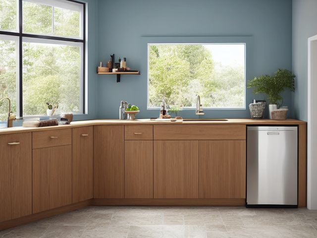

Kitchen micro zone
The Sink and Dishwashing Zone
The washing point for dishes, hands, and produce, and the place the whole kitchen resets from.
One session: 30-45 min. most of it under the sink, where the cleaners have been breeding

What done looks like
An empty sink with a dry basin and a wiped drain flange. One brush and one sponge standing upright where they drain rather than lying in a puddle. The drying rack either empty or holding only what is still wet. Under the sink, a single tray holding dish soap, dishwasher tablets, and one all-purpose cleaner, with the pipes visible around them.
Check these before you start
- Water and electricityA kettle, a socket, or a charging phone within splash distance of the basin, handled with wet hands, is the electrical risk this room actually has.
- Poison, choke, or strangleBleach mixed with an acidic or ammonia cleaner in the basin releases a gas that will drive you out of the room, and both bottles usually live under this sink.
The six passes, in order
Work them in this order. Sorting after you have arranged things means arranging things you were about to remove.
Sort
Decide what stays. Everything else leaves the zone now.
Pull everything out from under the sink and line it up on the floor. Combine the three half-empty bottles of the same spray, bin what has separated or lost its label, and move out anything that is not dish, sink, or plumbing related, because that cabinet gets damp and is the wrong home for spare bulbs, paper goods, or vases.
Straighten
Give what stays a home, placed where the hand actually reaches.
Soap and brush live in a caddy you can lift with one wet hand, so wiping under them takes no planning. Dishwasher tablets go in a container beside the machine rather than across the room, and the towel gets a bar within reach of somebody already standing at the basin.
Shine
Clean it, and use the cleaning to inspect what you cannot see when it is full.
The sponge is the dirtiest object in the room: wring it out and stand it on edge after every wash, and retire it the day it smells while dry. Scrub the drain flange, wipe the rubber seal all the way around the dishwasher door, and pull the dishwasher filter out and rinse it, because a filter that has never come out since the machine was fitted is why the glasses come out gritty.
Safety
Make the zone safe for everybody who uses it, including the shortest person.
Never store bleach beside an ammonia or toilet cleaner under this sink, and never combine them in the basin; keep them apart, capped, and labels facing out. If small children live here or visit, this is the one kitchen cabinet that genuinely earns a latch.
Standardize
Write down the best way you know today, so it survives you forgetting.
Write the empty-sink standard on a card taped inside the cabinet door: dishes in the machine or washed, basin wiped, brush standing, towel hung. A standard is the best way you know today, written down.
Sustain
Attach the reset to something that already happens, so it keeps itself.
The last thing before the kitchen light goes off, the sink gets emptied and the basin gets wiped dry.
Whether soaking is allowed
The real decision in this zone is not what to keep, it is whether you let the basin be a staging area. Soaking is the word a kitchen uses for postponing, and one soaking pan gives every other dish permission to join it. Settle it with a deadline rather than a ban: a pan may soak, but only until the current dishwasher cycle ends or until you next leave the room, whichever comes first. If a dish cannot meet that deadline, it gets washed now or goes in the machine dirty. The rule holds because it names a moment, and moments arrive on their own.
Cleaning it properly
This is the point the whole kitchen resets from, so it has to be genuinely clean, not just rinsed. The sponge is the dirtiest object in the room and the dishwasher filter is the reason your glasses come out gritty, so neither gets skipped.
Inspect as you clean. Cleaning is the only time you see the zone empty, so use it.
- A damp patch, a water stain, or a warped, darkening board on the cabinet floor under the trap, the quiet sign of a slow leak.
- Soft black mold in the folds of the dishwasher gasket or in the sealant bead running around the rim of the sink.
- Rust, a green crust, or a bead of moisture forming on a pipe joint or the compression fitting under the sink.
- A sponge or brush that smells while it is dry, telling you it is spent no matter how it looks.
- Swelling, blistering, or dark staining along the front edge of the cabinet base where splashes land and soak in.
The standard that keeps it fixed
Empty sink, dry basin, one brush and one sponge standing, cleaners on one tray with the plumbing visible.
Reset trigger. When the coffee brews in the morning, the sink gets checked and cleared.
Next in this room
- The Cooking Zone, the zone before this one
- The Upper Cabinets, the zone after this one
- All 7 micro zones in the Kitchen
Related reading
- What is 6S?
- This zone's safety pass, in full
- Is one spot in this zone always the one you skip?
- Why this zone gets messy again
- Decluttering vs. organizing
- Before you buy storage for this zone
- Still does not fit, even after the honest count?
- Does something in this zone actually get used somewhere else?
- Stuck on one item in this zone?
- Written the standard, but nobody else follows it?
- Does everyone in the house agree what "done" looks like here?
- Does more than one person use this zone?
- Found a duplicate of something in this zone?
- Why the standard above names one home per category
- Is the everyday item in this zone actually the easy one to reach?
- Not sure whether to keep something in this zone?
- Does this zone keep running out of something?
- Started this zone and stalled partway through?
- Have you stopped noticing the clutter in this zone?
When you want it off the screen
Carry The Sink and Dishwashing Zone into the room
The method above is complete and free. The Whole House Print Pack puts The Sink and Dishwashing Zone and the other 113 micro zones on 684 printable cards, so the steps you just read are not stuck behind a phone screen while your hands are full.
The Print Pack, 19 dollarsJust this zone, 4 dollarsOr draw a card free
The Sink and Dishwashing Zone on its own is 4 dollars for 6 cards. All 114 micro zones is 19 dollars for 684. The whole house is the better buy; the single zone is here so you can take only what you are working on.
If The Sink and Dishwashing Zone keeps fighting back, the real problem usually sits somewhere else in the room. A one hour virtual consult is 250 dollars: we find the function, the friction and the root cause together, and you keep a written standard for the space. See what a consult covers.